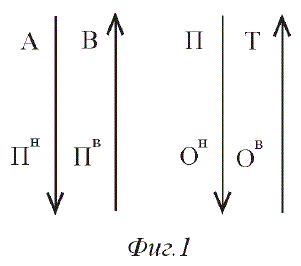
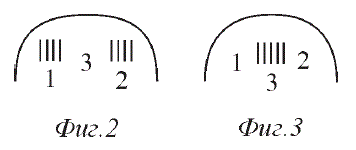
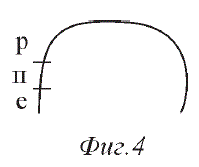
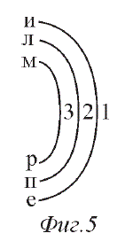

Беседа 870 от 3877 · Беинса Дуно
Проявленията на ума
Двадесет и седма лекция
21 юни 1925 г.
Доброта, Истина, Красота – това е Любовта.
Размишление
Прочетоха се работите върху темата „Ролята на положителните и отрицателните сили в Природата“.

Сега ще ви дам друго разпределение на силите в човешкия ум. Според живота на човека и дейността на неговия ум различаваме естествен, природен, разумен, морален, личен и индивидуален ум. Естественият ум се занимава с прости факти. Природният ум е творчески, събирателен. Неговото място е в средата на челото. Разумът в човека е висшето проявление на умствените му сили. Моралните сили на ума се изразяват в моралния живот на човека. Личните и индивидуалните сили на ума се изразяват в личния и индивидуалния живот на човека.
При естествения живот човек не чувства никакви страдания, никакви нещастия – нищо не може да го засегне. Той е дете на Природата: тъй дребно, тъй малко, че може да минава през всичките дупки на Природата, без тя да го улови. Естественият ум е приготовление за природния. При природния живот човек започва да твори, да събира и Природата вече започва да му иска сметка за всичко сторено. Вследствие на това клетките в организъма се събират в общества и започват да функционират съзнателно. Това се дължи на женския елемент, на женския принцип в Природата, който събира и действа, проявява се от вътре на вън. В природния ум се намира подсъзнанието на човека. На трето място иде разумният живот, в който влиза самосъзнанието на човека. Моралният живот на човека се отнася към една морална област, дето той е свързан със същества, които по развитието си седят по-високо от сегашните хора. Дойдете ли до индивидуалния живот на човека, трябва да подразбирате това състояние, когато човек иска да се прояви като самостоятелно същество, което търси своето щастие, своето благо. В моралния живот човек има общение не само със съществото, при което живее, но и с цялата Разумна Природа.
Щом дойдете до личния живот на човека, той вече се проявява в обществото като личност. Направете един опит – да видите ще можете ли да различите в себе си своя естествен ум. За да познаете това ваше състояние, трябва да се освободите от всяка грижа: трябва да си представите, че сте едно малко дете, или още повече, една малка буболечица, божа кравица, и че се движите с нейното съзнание, с нейното разбиране за живота, с нейните нужди. Ще можете ли да се смалите така? Ще кажете, че не можете. Питам: ако едно възвишено същество, или един ангел, който е завършил своята еволюция, идва да ви ръководи, той не е ли една малка божа кравица? Както виждате, този ангел, това възвишено същество, се смалява. Ето защо и вие трябва да направите този съзнателен опит: да влезете в положението на божата кравица най-много за пет минути. Най-добър момент за опита е времето, когато мислите за големи, за велики работи. Наблюдавайте тогава какво може да направите, ако сте в съзнанието на тази малка божа кравица. Защо е нужен този опит? – Защото всеки човек, който не може да слезе в положението на една божа кравица, той не ще може да се качи и в положението на един ангел. Когато у вас се заражда желание да слизате надолу, вие изучавате вече великия закон на инволюцията; след това вие ще бъдете готови да се качвате нагоре и да изучавате великия закон на еволюцията. Вие не трябва да забравяте тези два процеса на развитие, през които е минал човекът. Инволюционният процес помага на еволюционния процес във вашето развитие. Вие постоянно трябва да помните тия два процеса, които стават у вас. Когато искате да превърнете едно неприятно чувство в приятно, искате например да превърнете злобата или омразата в положително чувство, вие трябва да слезете във вашия естествен ум или във вашия индивидуален живот. Само при такова състояние ще може да трансформирате събралата се отрицателна енергия у вас. Такива са законите на Висшата Разумна Природа.
И тъй, вие вече сте минали първия етап на вашия ум, т.е. минали сте през естествения ум. Сега сте в природния, в творческия ум, дето са складирани всички ваши възпоменания, мисли и желания на миналото. В разумния живот изобщо преобладават кривите линии. Те се виждат ясно по челото на разумния човек. По него се забелязват много изпъкналости.


И сега, като се изучават гънките в мозъка на човека, забелязва се, че те не са еднакви у всички хора. При подробно изучаване на човешкия мозък ясно се вижда голямото различие в нагъването на мозъчното вещество у различните хора. Малко естественици днес изучават човешкия мозък тъй, както трябва. Освен това, нужно е частично изучаване на челата на хората. За интелигентността на човека например не се съди от целия мозък, а само от неговото чело, или по-право – от съответния център, който заема определено място и част на челото. За да се достави необходимата материя за създаване органа на правата мисъл, от човека се изисква нормален, природосъобразен живот. Само така човек ще стане добър проводник на чистата природна мисъл. Ето защо съвременните хора трябва да развиват, да обработват своя мозък. Когато се разработва човешкият мозък, в първо време се забелязва набиране на известна енергия, която прави човека нервен, привидно недоволен от живота. Това стягане, това ограничение, което и вие изпитвате, създава у вас подтик да вървите нагоре. Сега вие искате да се разширявате. Не, вие имате достатъчно разширение – сега ви е нужно движение нагоре. Нагоре трябва да се движите! Движението ви нагоре ще се отрази и върху вашето чело. То ще почне да се развива правилно, т.е. гънките на мозъка ще почнат да се разработват.
Казвам: вие трябва да наблюдавате кога се намирате в естествено състояние на вашия ум, кога действа природният ум, кога – разумът, и кога – моралните сили на мозъка. Понякога всички качества или сили на ума се проявяват едновременно. Такива хора се наричат нормални. За да бъде човек нормален, необходими са тия шест елемента на ума. Тази е нормата, с която ние мерим постъпките на хората. Когато естественият ум, природният ум, разумът, моралните сили, личният ум и индивидуалният ум у човека функционират правилно, ние имаме правилно или нормално развит човек в умствено отношение. Щом едно от тия качества липсва у някой човек, ние имаме вече отклонение от нормата.
Разумната Природа разполага с ред начини и методи, когато иска да изправи хората, когато иска да посочи грешките им. Например, ако ти направиш една малка погрешка в естествения ум, тя ще ти напомни само, леко ще те накаже, като ти изпрати слаба хрема. Ако грешката ти е в природния ум, тя ще ти изпрати треска, придружена със силна температура. Ако грешката ти е в разума, тя ще ти изпрати болестта коремен тиф или петнист тиф. Колкото по-нагоре се качваш и грешиш, толкова и болестите, които Природата ти изпраща, са по-лоши. Ако грешиш при моралните чувства, ще страдаш от такава ужасна неврастения, каквато медицината не познава. Ако грешиш в личните чувства, много ще се дразниш. Тогава Сатурн ще има влияние върху тебе и ти ще виждаш само обратните, отрицателните черти на живота. И най-после, ако грешиш в индивидуалния си живот, няма да постигнеш нищо от това, което желаеш.
И така, всеки човек, който иска да успява в живота си, трябва да има тия шест ключа на ума, понеже те са свързани с известен род сили, необходими за неговото развитие. За да бъде човек морален, трябва да има тия сили, организирани в себе си. За да бъде човек разумен, трябва да има тия сили, организирани в себе си. За да прояви човек правилно природния си ум, трябва да има тия сили, организирани в себе си. Такива хора се отличават с едно естествено благоразумие. Те имат добра обноска спрямо всички хора и винаги са любезни. Хора, у които е добре развит естественият ум, те се проявяват като деца: те наблюдават нещата отгоре, повърхностно, не отиват много надълбоко. Такива хора разсъждават плитко, но не са глупави.

Отговор: Към личните чувства.
Когато се засегнат личните ви чувства, ще се лекувате с природния си ум (1); когато се засегнат индивидуалните ви чувства, ще се лекувате с естествения си ум (2); когато се засегнат моралните ви чувства, ще се лекувате с разума (3). Проявите на ума са свързани две по две помежду си. Като се знае това нещо, то може да се използва като начин за правилно трансформиране на енергиите у човека.
Забележете: в много от животните, у кучетата например, личните чувства са силно развити. И когато някое куче иска да подчертае своето достойнство, то завива опашката си на колело. Това показва, че то е доволно от себе си. Обаче хванете ли опашката му, то веднага се озъбва, показва, че е недоволно. Защо прави така? – Понеже чрез гръбначния му стълб става силно изтичане на енергия. Това изтичане на енергията започва от главата, минава през гръбначния стълб и отива към центъра на Земята. Така става с всички млекопитаещи. Следователно при всяко побутване на животните ние ги подпушваме, при което в тях се образува едно болезнено, неприятно състояние. Този процес става и с човека, само че подпушването у него се произвежда в носа. У кучето става в опашката, а у човека – в носа. И затова българите често казват за някого: „Надул нос!“ Щом се подпушите и енергията ви се събере на върха на носа, как ще се лекувате? Има един психически начин за лекуване. Щом се подпушиш или си недоволен от нещо, хвани носа си и кажи: „Няма нищо!“ Не се ли отпушиш, пак хвани носа си от горе до долу с ръката три-четири пъти, изговори гласно името си и кажи: „Няма нищо!“ Можеш да хванеш носа и с двете си ръце. По този начин ти ще утихнеш. Та казвам: направете този опит, когато сте в раздразнено състояние, да видите дали законът ще проработи. Това е опит за лесно трансформиране на енергиите. Другояче може да се мине цяла седмица, докато силите ви се уравновесят. Когато течението на силите у човека става правилно, нормално, човек чувства в себе си лекота, радостно чувство, като че от гърба му се е снел някакъв товар.
Добре е, ако учителите в училищата практикуват този метод върху своите ученици. Когато някое дете в училището се раздразни, нека учителят поглади леко носа му и каже: „Няма нищо!“ Този метод има отлично възпитателно въздействие върху децата. Той представлява начин за отпушване на пътищата, през които тече енергията. Направите ли един малък масаж на носа си, и енергията протича. Ако някой от вас е подпушен, като се върне у дома си, нека направи този опит. Защо трябва да масажирате носа си? – Понеже носът е един връх на човешкото лице, на който понякога се събира излишно количество електричество и магнетизъм, които го подпушват. Когато излишните енергии се събират в мозъка, артериалната и венозната система се подпушват, много венозна кръв се събира в слепоочната област и пулсът започва да бие усилено. Когато имате такова подпушване, ще вземете малко квас и от вечерта ще го наложите на слепите си очи. На сутринта ще бъдете вече в нормално състояние – подпушването се е трансформирало. Опасни са подпушванията в гърдите, защото те произвеждат охтика. Подпушването в стомаха предизвиква неправилно храносмилане. Само пълните хора страдат от коремоболие. Те имат излишна енергия, която трябва да се отнеме. На слабите хора, когато се подпушат, трябва да се предаде енергия – те страдат от недоимък на енергия. Значи сухият човек може да отнема енергия от пълния. Онзи човек, на когото мозъкът е подпушен, трябва да се лекува от някой дебел, пълен човек със здрав, светъл мозък, за да му предаде енергия. Ако при него отиде някой хилав, сух човек с болен мозък, той ще стане двойно по-хилав.
На онези от вас, които се готвят за лекари, бих препоръчал да спазват следните правила при лекуването: ако вие сте пълен и лекувате някой сух, болен човек, като лекар сте на място, ще можете да го излекувате; но ако и болният е пълен като вас, вие не ще можете да го излекувате, затова трябва да вземете със себе си някой ваш другар – здрав, но слаб по натура. Той ще ви придружава като асистент, ще вземе дясната или лявата ръка на болния, ще я подържи малко и така ще му помогне. Правете опити, за да се убедите в истинността на тази теория. Ако някой пълен човек страда от коремоболие, нека повика един свой близък познат – слаб, но здрав човек, и го помоли да тури дясната си ръка на слънчевия му възел, да я подържи така пет-десет минути, и коремоболието ще изчезне. Пък ако някой сух човек страда от главоболие, нека намери някой пълен, здрав човек, и го помоли да подържи челото му при слепите очи с едната или с двете си ръце, и главоболието ще изчезне. По този начин хората могат взаимно да си помагат.
Казвам: Природата обича енергиите Ă да вървят правилно. Между Земята и човека винаги трябва да става правилна обмяна. Освен между Земята и човека, обмяна трябва да става и между Слънцето и човека. Човек всякога трябва да спазва връзката си с центъра на Земята и с центъра на Слънцето. Между Духовния свят и човека също тъй трябва да има правилна обмяна на енергиите. Човек може да влезе в Духовния свят само след като се изчисти от излишъка на своите енергии. Те не са нужни за неговото развитие. Когато човек има някакъв дефект в своя разум, той ще бъде тесногръд; може да бъде морален човек, но ще е фанатик, какъвто е бил апостол Павел преди обръщането си в християнството. Апостол Павел бил философ човек, но тесногръд, и затова преследвал всички, които не вярвали и не разбирали Божественото, както той го разбирал. След възприемане на Христовото учение той поправил погрешката си. Обаче много хора и до днес подражават на апостол Павел, който казва: „Всичко считам за измет, за да позная Христа.“ То значи: всичко считам за измет, за да позная Любовта.
Каква е разликата между личния и индивидуалния живот? – Когато човек се индивидуализира, т.е. живее индивидуален живот, той навлиза вътре в себе си, мисли за себе си. Личният живот има отношение повече към външните хора. Такъв човек се спира повече върху това, какво мислят другите хора за него. Човек със силно развит личен живот, като напише една книга, ще мисли какво ще кажат критиците за него. Изчезне ли обществото пред такъв човек, и личният живот изчезва. Индивидуалният живот е по-дълбок от личния. При личния живот човек търси доброто мнение, приятелството на цялото общество, не се задоволява с един приятел. Такъв човек почти няма приятели. Хора, които базират живота си върху личния ум, не могат да завързват приятелство. Те могат да правят познанство, но не и приятелство. Само човекът на индивидуалния живот може да завързва приятелство и да задържа приятелите си. Ако индивидуалният, личният и моралният живот са правилно развити у човека, може да става дума за приятели и приятелство. Ако индивидуалният ум у човека е нормално развит, тогава и личният, и моралният ум ще бъдат нормално развити – те са свързани помежду си. Ако личният живот на човека е силно развит, главата му отзад на темето е висока. Ако моралният живот на човека е силно развит, темето на главата отгоре е високо издигнато. При личния живот семейните чувства са слабо развити. Такъв човек води чергарски живот, няма свой дом. У него е силно развит стремежът към пътешествия, обаче от скитничество човек малко се учи.
При естествения живот челото на човека или е вдлъбнато навътре, или е издадено навън. Хора, у които челото е вдлъбнато навътре, са като деца: те нямат външни наблюдения, но интуитивно, вътрешно схващат нещата. Наблюдателността у човека се образува, след като се развие природният ум. Тогава естествените чувства имат по-добри изрази. Някои смесват природния с естествения ум и казват: „Този човек има отличен природен ум.“ Всъщност те подразбират неговия естествен ум. Ако природният ум е нормално развит в някой човек, той е досетлив. У художниците и у музикантите природният ум е силно развит, защото музиката спада в областта на природния ум. Математиката пък спада в областта на естествения ум. Следователно онзи, който иска да бъде математик, същевременно трябва да бъде и музикант. Ако той не е музикант, не може да бъде и математик. Математиката представлява корените на музиката. Естественият ум започва от математиката и върху нея се гради музиката. Значи тя е основа. Върху музиката се гради разумният живот. Върху разумния живот се гради въображението – област, на която трябва да се даде ново име. Аз я наричам гениалността у човека. Някои смесват гениалността у човека с творчеството. Не, у гениалния човек няма творчество в този смисъл, какъвто съвременните хора разбират. Гениалният човек изразява само онова, което Живата, Разумната Природа е създала, сътворила. Той е огледало на тази Природа. Въображението, гениалността у човека е почвата, върху която се създават най-хубавите, най-красивите неща в живота. Когато умът на човека е силно развит в тази насока, забелязват се вълни, които се отразяват по цялото му тяло и оставят известни оттенъци. Това са все течения, които идват от Живата Природа, минават през ума на човека, през гръбначния му стълб и слизат надолу. В човека постоянно циркулират два вида течения: от горе на долу и от долу на горе. Ако хората не подпушваха теченията на силите в Природата, досега щяха да бъдат избавени от много злини. В съвременните народи, в съвременното човечество тия сили са подпушени и като следствие от това се явяват войните.
Та казвам: никога не се стремете към унищожение. Нищо в Природата не може да се унищожи. И в живота нищо не трябва да се унищожава, но само да се трансформира. Не се противопоставяйте срещу проявленията на Природата. Няма по-интелигентно, по-умно същество от Природата! При това тя ограничава съществата. Вие не можете да я подчините, но тя ще ви се наложи, тя ще ви ограничи. Същият закон се отнася и до човека. При всичката негова интелигентност и той трябва да си наложи известни ограничения, и то по съвсем други закони. Никой не може да седи над Природата. Тя налага ограничения на всички същества не от зла воля, но по необходимост. Те са в реда на нещата. От тия ограничения зависи и вашето правилно развитие. Защо става това, има ред причини. Вие трябва да вложите всичкото си доверие в Разумната Природа, в нейния ум, в нейния промисъл. Мислите ли, че в Природата няма разум, всички разумни същества, които влизат в нея, колективно ще се опълчат срещу вас и ще ви въздействат, докато се поправите. Това не върши самата Природа, но законите и силите в нея, срещу които вие реагирате. Вие искате да ги подчините на себе си, но тя ви казва, че слабият трябва да се смирява.
Нищо в Природата не може да се унищожи! В теософската литература често се цитира изречението: „Убий всяко желание в себе си!“ Това е неправилен превод на едно от индуските изречения, който говори за неразбиране на окултизма. В индуската литература мисълта е съвсем другояче поставена. Няма защо човек да убива желанията си. Апостол Павел в посланията си употребява почти същите думи: „Да умъртвим тялото си.“ Аз вземам думата умъртвяване в смисъл на трансформиране на енергията. Ние трябва да смекчаваме, да намаляваме силната деятелност на експулсивната енергия, а не да я унищожаваме. Така постъпваме и когато искаме да намалим силното течение на водата, която завлича и унищожава всичко, каквото срещне на пътя си – ние изменяме наклона Ă – да стане по-малък, за да се ползват всички от нейните блага. По същия закон, ако насочите силна струя вода върху цветята на една градина, вие ще ги изкорените. За да се намали нейната енергия, вие трябва да турите на пътя едно препятствие. Искате ли да дадете силен напор на водата, махнете наклона Ă, премахнете препятствието от пътя Ă и всички капчици ще се съберат в кръг, ще стане силно изтичане на водата.
Следователно, когато искате да измените вашия живот, ще увеличавате или намалявате наклона, а според това ще се увеличава или намалява струята на вашата енергия. Вие можете или да разпръснете своята енергия в много капчици, или да я съберете в една силна струя. Преди да измените наклона на енергията си, ще трябва да се спрете, да обмислите добре как да постъпите. Често казвате: „Аз не мога да търпя това безчестие!“ – и започвате да се гневите, да негодувате. Това показва, че сте събрали всички капки в една силна струя. Какво трябва да направите, за да се освободите от гнева? – Разпръснете тази струя – тя е излишна. В случая тя само ще ви повреди, ще загубите мира си. Преди всичко това ваше състояние е хипнотическо. Отвън никой не може да направи човека безчестен! Ако той мисли за себе си, че е такъв, то е друг въпрос, но ако той не е безчестен, целият свят може да говори за него, каквото иска, той няма да стане такъв. Ако аз сам не се съдя, никой не може да ме съди! Съденето подразбира да осветлиш съзнанието на някого, за да изправи погрешките си. Такъв е законът. Ако вие искате да съдите някого, трябва да седите поне три пръста по-високо от него, и тогава ще можете да го съдите. Може да ме съди само онзи, който седи по-високо от мене. Само великият художник учител може да даде мнението си за някоя хубава картина, но начинаещият ученик няма право да дава мнението си. Затова нека не ви смущава мнението на другите. Вие ги изслушвайте, но не отбивайте струята на вашата енергия от своя път.
Всеки човек има едно мнение за себе си, по-близо или по-далече от Истината. Някога ти мислиш, че си даровит човек. Вярно е това, но щом си даровит, постарай се да напишеш едно малко стихотворение – за себе си само, без да го изнасяш пред другите. След два-три дена пак го прочети и виж дали ти причинява радост: ако ти причинява радост, ти си даровит човек. Четеш ли го и на другите хора, те да го харесат – хубавото ще изчезне. Който те слуша да четеш своето малко стихотворение, ще каже: „Колко е глупаво!“ Той те измерва с други майстори и си мисли: „Колко по-хубави стихотворения от това съм чел!“ Така е, но като твоето стихотворение именно той не е чел. Колкото и да е глупаво това стихотворение, то е unicum и като него няма друго; то е нещо особено, друг не може да каже същото нещо, макар и глупаво. И в глупавото стихотворение има философия. Вие имате особена представа за сегашните гениални хора. Сегашните гениални хора един ден ще минават за прости хора, а сегашните прости хора ще станат за в бъдеще гениални хора. Това може да се докаже с факти. Същото нещо виждаме и в самата Природа, затова не се обезсърчавайте, вървете напред!
Някои хора, като правят погрешки, виждат им се „квадратни глупости“. Щом техните погрешки са „квадратни глупости“, това е добро, защото върху тях може да се съгради цяла философия. Питам: Разумността, Мъдростта могат ли да бъдат квадратна глупост? – Не, разумността не може да бъде квадратна, но глупостта може да бъде квадратна. Чули ли сте да казват за някой човек, че говори квадратни умности? Има ли такова изречение? – Не. Само за простите хора обаче казват така. Както виждате, простите хора прилагат математиката много добре. За тях се казва, че говорят „квадратни глупости“. Но и глупостите са относителни неща.
Каква е разликата между глупавия и умния човек? Единствената разлика седи в следното: глупавият не съзнава, че е глупав; умният или съзнава, че е глупав, или съзнава, че е умен. Ако запитам най-глупавия човек какво има на Слънцето, той ще ми отговори, че не знае. Ако запитам най-умния какво има на Слънцето, той ще каже: „Господ знае това.“ Този човек е умен, защото знае, че ако той не може да отговори на този въпрос, Господ ще отговори. Право е, че Господ знае, а обикновеният човек още не знае. Ако запитат умния човек колко заплата получава, той ще каже: „Моята заплата, заедно с тази на председателя, е десет хиляди лева.“ Ако зададете на глупавия същия въпрос, той ще каже: „Моята заплата е шестдесет лева месечно.“ Първият мисли, че като прибави парите на председателя към своите, това ще го повдигне пред очите на другите хора. Глупавият отговаря направо на въпроса, без да мисли. Глупавият отговаря бързо, без да мисли. Умният, преди да отговаря, мисли. Една българска пословица казва: „Два пъти мери, веднъж крой!“ Аз казвам: два пъти обмисли, веднъж кажи. Така постъпва разумният човек.
Доброта, Истина, Красота – това е Любовта.